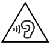
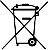

[デバイス情報] [安全と規制に関する情報]
[デバイス情報] [安全と規制に関する情報]このガイドには、Pixel 4a（5G）に同梱されている、印刷版の安全と保証に関する小冊子と同じ内容の、基本的な安全についてのガイドラインが記載されています。さらに、Pixel 4a（5G）の安全、規制、保証に関する追加情報も記載されています。
安全、環境、規制に関する情報: g.co/pixel/safety または [設定] [デバイス情報] [安全と規制に関する情報]
購入国に適用される保証の詳細（申し立てを行う手順など）: g.co/pixel/warranty
本デバイスの電子注意書きや比吸収率（SAR）について: [設定] [デバイス情報] [規制ラベル]
総合的なオンライン ヘルプ: g.co/pixel/help
 警告: 健康と安全に関する情報: けが、不快感、物的損害（Pixel 4a（5G）の破損を含む）、その他の潜在的危険性を軽減するために、Pixel 4a（5G）をご使用になる前に必ずお読みください。
警告: 健康と安全に関する情報: けが、不快感、物的損害（Pixel 4a（5G）の破損を含む）、その他の潜在的危険性を軽減するために、Pixel 4a（5G）をご使用になる前に必ずお読みください。
Pixel 4a（5G）は丁寧に取り扱ってください。スマートフォンを分解する、落とす、曲げる、火に近づける、強い圧力をかける、または穴を開けると、本体や電池が損傷する恐れがあります。画面のひび割れなど、本体が破損している Pixel 4a（5G）は使用しないでください。破損した Pixel 4a（5G）を使用すると、電池が過熱したりけがをしたりする恐れがあります。Pixel 4a（5G）に液体がかからないようにしてください。液体が付着すると、ショートや過熱の原因となります。Pixel 4a（5G）が濡れた場合でも、外部熱源を使って乾かさないでください。
Pixel 4a（5G）は、気温が 0～35°C の環境で機能するように設計されています。保管の際は、-20～45°C の場所に保管してください。温度が 45°C を超える可能性がある場所に Pixel 4a（5G）を放置しないでください（車のダッシュボード、暖房の吹き出し口付近など）。Pixel 4a（5G）の損傷、電池の過熱、火災の危険をもたらす恐れがあります。熱源の近くに置かず、直射日光を避けてください。デバイスが熱くなりすぎたときは、電源に接続している場合は接続を外し、涼しい場所に移して温度が下がるまで使用しないでください。Pixel 4a（5G）は、標高 2,000 m 以下で動作するように設計されています。
ゲーム、動画の撮影、ライトの使用、VR など、特定の条件下で Pixel 4a（5G）を使用すると、通常の動作条件下よりも Pixel 4a（5G）の温度が高くなることがあります。その結果、Pixel 4a（5G）が省電力モードで動作したり、一時的にシャットダウンしたりする可能性があります。上記の条件下でデバイスを使用する場合は特にご注意ください。
ご自身で Pixel 4a（5G）を修理しようとしないでください。デバイスを分解すると防水性能が失われるほか、けがやデバイスの破損につながる恐れがあります。
Pixel 4a（5G）が正常に動作しない場合や破損した場合は使用を中止し、カスタマー サービスにお問い合わせください。詳しくは、g.co/pixel/contact をご覧ください。
電源アダプターや Pixel 4a (5G) の使用または充電の際は、換気をよくするようご注意ください。破損したケーブル、電源アダプターの使用や、湿気のある場所での充電は、火災、感電、けがの原因になるほか、Pixel 4a (5G) フォンや他の家財などの損傷につながる恐れがあります。Pixel 4a (5G) を充電する際は、電源アダプターを Pixel 4a (5G) の近くの利用しやすい場所にあるコンセントに差し込んでください。直射日光の当たる場所での充電は避けてください。
スマートフォンを充電する際は、電源アダプターをスマートフォンの近くの利用しやすい場所にあるコンセントに差し込んでください。電源アダプターをコンセントから抜く際は、アダプターを持って抜いてください。絶対に充電ケーブルを引っ張らないでください。ケーブルをねじったり挟んだりしないでください。コネクタを無理にポートに差し込まないでください。充電中に充電デバイスまたは電源アダプターのプラグを抜くよう指示するメッセージが表示された場合は、充電デバイスまたは電源アダプターを抜いてください。充電を再開する前に、充電ケーブルのコネクタとスマートフォンの充電ポートに水分や埃などが付着していないことを確認してください。
Pixel 4a (5G) の充電には、USB-C PD 準拠の充電器（本デバイスに付属のアダプターなど）または Google ストアおよび Google の正規販売パートナーから入手可能な USB-C 充電器（「Made for Google」のバッジをご確認ください）のみを使用してください。AC アダプターは、IEC 60950-1 / 62368-1（制限電源出力）の認定を受け（5 V DC と最大 3 A、9 V DC と最大 2 A、またはその両方）、IEEE 1725 に準拠した電池システムの CTIA 認証要件に適合している必要があります。Pixel 4a (5G) に付属のアダプターはこの条件に適合しています。互換性のない充電アクセサリを使用すると、火災、感電、けが、スマートフォンやアクセサリの損傷の原因となる恐れがあります。
Pixel 4a（5G）とその充電器は通常の動作時に発熱しますが、表面温度に関する適用基準および制限を遵守しています。熱くなった表面に長時間触れていると不快感や火傷の原因になる可能性があるため、本デバイスの使用中または充電中に長時間、直接または間接的に肌に接触させないようにしてください。本デバイスまたは電源アダプターの上で眠る、これらとともに眠る、またはこれらを毛布や枕で覆う行為はしないでください。肌が熱を感じにくい健康状態にある場合は、この点に特にご注意ください。
スマートフォンはおもちゃではありません。スマートフォンには、小さな部品、プラスチック、ガラス、金属の部品、先のとがった部品が含まれる（または付属する）可能性があるため、けがをしたり、飲み込んで窒息を招いたりする恐れがあります。子どもがコードやケーブルで窒息死する場合もあります。スマートフォンのコードやケーブルは、子どもの手の届かない（1 m 以上離れた）場所に保管し、スマートフォンやアクセサリで遊ばせないようにしてください。子ども自身がけがをするだけでなく他人にけがを負わせる可能性もあります。また、誤ってスマートフォンを壊してしまう可能性もあります。小さな部品を飲み込んでしまった場合は、すぐに医療機関にご相談ください。
大きな音（音楽など）に長時間さらされると、難聴の原因となる可能性があります。聴覚に影響を及ぼさないよう、大音量で長時間聴かないようにしてください。大音量と周囲の雑音にさらされる状態が続くと、大きな音が実際よりも小さい音に感じられるようになることがあります。ヘッドフォンやイヤフォンを使用する前に音量をご確認ください。
本スマートフォンで使用している充電式リチウムイオン電池は取り扱いに注意が必要な部品であり、破損した場合、けがの原因となる恐れがあります。電池の取り出しはご自身では行わないでください。電池を交換する場合は、Google または Google の認定サービス プロバイダにお問い合わせください。連絡先情報については、g.co/pixel/contact をご覧ください。資格を持つ技術者以外が電池を交換した場合、本デバイスを損傷させる恐れがあります。不適切な交換や適合していない電池の使用は、火災、爆発、漏電などの事故を引き起こす恐れがあります。電池の改造や再製造 / 修理をする、電池に穴を開ける、異物を挿入しようとする、電池を水などの液体に浸したり触れさせたりする、火や過度の熱などの危険にさらすといったことをしないでください。電池をショートさせたり、金属や導電性の物体を電池の端子に接触させたりしないでください。スマートフォンや電池を落とさないようにしてください。特に硬い表面上にスマートフォンや電池を落として、損傷が疑われるか損傷に気づいた場合は、Google または Google 認定サービス プロバイダにお問い合わせください。電池が液漏れした場合は、漏れた液が目に入らないようにし、皮膚や衣服にも付かないようにしてください。液が目に入ったときは、こすらずに、すぐにきれいな水で目を洗い、医療機関を受診してください。
このスマートフォンの充電式リチウムイオン電池は、IEEE 1725 およびその他の該当する規格を遵守しています。
デバイス、電池、アクセサリの廃棄の際は、各地域の規制を遵守してください。不適切な方法で運搬したり、通常の家庭ごみに廃棄したりしないでください。不適切な廃棄は、火災、爆発など、危険を招く恐れがあります。分解、破壊、45°C 以上の加熱、焼却は行わないでください。スマートフォンのリサイクルについて詳しくは、g.co/pixel/recycle をご覧ください。
スマートフォンの部品や内部回路の損傷を防ぐため、ほこり、煙、湿気、汚れの多い環境や磁気の近くで、スマートフォンやアクセサリを使用または保管しないでください。熱源の近くに置かず、直射日光を避けてください。車内など温度が 45°C を超える可能性がある場所にデバイスを放置しないでください（ダッシュボードの上、窓枠、暖房の吹き出し口付近、直射日光や紫外線に長時間さらされるガラスの内側など）。スマートフォンの損傷や電池の過熱を招いたり、火災や爆発の危険をもたらしたりする可能性があります。
可燃性物質、爆発物が保管されている場所（ガソリン スタンド、燃料貯蔵庫、化学プラントなど）でのスマートフォンの充電、使用、保管、持ち運びは避けてください。爆破作業が進行中の場所や、空気中に可燃性の化学物質、蒸気、粒子（粒状物、粉塵、金属粉など）が高濃度で含まれていて爆発の可能性のある環境で、本ワイヤレス デバイスを使用しないでください。このような環境で火花が発生すると、爆発や火災の原因となり、けがや、さらには死に至る事態を招く場合があります。こうした危険の恐れがある環境では、注意を促すすべての案内板や標識に従って対応してください。
スマートフォンから地図サービスやナビゲーション サービスにアクセスできる場合があります。地図やナビゲーションをご利用になる場合は、データ接続と位置情報サービスが有効になっている必要がありますが、常にあらゆる場所で利用可能であるとは限りません。地図やルートが不正確な場合や、実際の状況が、地図、データ、交通状況、ルート、コンテンツ、その他の検索結果と異なる場合があります。ルートを十分に確認し、適用されるすべての交通法規や標識を遵守して、常識を働かせて判断したうえで、ご自身の責任のもと地図やナビゲーションのサービスをご利用ください。お客様の行動とその結果は、常にお客様ご自身の責任となります。AR ナビゲーション機能のご利用には、最新の Google ストリートビュー画像と明るい屋外光が必要です（この機能はインドではご利用になれません）。
特定の活動を行っている最中に本デバイスを使用すると注意が散漫になる可能性があり、ご自身や周囲の人にとって危険な状況を招く恐れがあります。事故のリスクを軽減するため（また、ほとんどの場所で法律上禁止されているため）、自動車の運転中や自転車での走行中、機械の操作中、あるいは、深刻な結果をもたらす可能性のある活動に従事している最中には本デバイスを使用しないでください。モバイル デバイス、ヘッドフォン、ヘルメットの使用に関する地域の法律を遵守してください。
本デバイスは、該当する電磁波曝露に関する規制要件を満たし、評価を受けており、高周波（RF）エネルギーに対する曝露の上限値を超えないように設計、製造されています。
比吸収率（SAR）の規制上限が人体の任意の組織 1 g あたり平均 1.6 W/kg の国で、最大 SAR 値は、G025E の場合、頭部から離さずに使用した場合は 1.20 W/kg、身体から 1.0 cm 離して使用した場合は 1.20 W/kg です。G6QU3 の場合、頭部から離さずに使用した場合は 1.20 W/kg、身体から 1.0 cm 離して使用した場合は 1.20 W/kg です。比吸収率（SAR）の規制上限が人体の任意の組織 10 g あたり平均 2.0 W/kg の国で、本デバイスタイプの最大 SAR 値は、頭部から離さずに使用した場合は 0.94 W/kg、身体から 5 mm 離して使用した場合は 1.40 W/kg です。
Pixel 4a（5G）のこうした法域での SAR の許容値は、[設定] [デバイス情報] [規制ラベル] で確認できます。
RF エネルギーへの曝露を減らすには、ハンズフリーで使用してください（内蔵スピーカーフォン、ヘッドフォン、その他の同様のアクセサリなど）。デバイスのケースやホルスターなどのアクセサリは、金属部品を使用していないものをご利用ください。距離要件を満たすよう、本デバイスは身体から離してご利用ください。
SAR について詳しくは、以下のページをご覧ください。
fcc.gov
icnirp.org
ec.europa.eu
dot.gov.in
ワイヤレス技術（モバイル通信、Wi-Fi など）の使用禁止ルールを遵守してください。本デバイスは高周波放出に適用される規制を遵守した設計となっていますが、無線デバイスの使用は他の電子機器に悪影響を及ぼすことがあります。たとえば、飛行機内、または飛行機に搭乗する直前の無線デバイスの使用については、必ず航空会社の指示に従ってください。機内での無線デバイスの使用はワイヤレス ネットワークを妨害したり、航空機の運航に危険をもたらしたりする恐れがあります。また、法律で使用が禁じられている場合もあります。機内モードにすればデバイスを使用できることもあります。
無線デバイスは、緊急時の通信手段として利用できないことがあります。本デバイスは無線通信を使用して動作するため、条件によっては接続を確立または維持できない場合があります。本デバイスは充電式電池を利用しており、充電式電池は温度、使用方法、破損などの影響を受ける場合があります。一部の地域では緊急時情報を無線ネットワークで配信しますが、ネットワーク接続の状況によっては、お使いのデバイスでそうした通信を受信できないことがあります。一部の機能と緊急時の情報や通信は、一部の地域や言語ではご利用になれない場合があります。
本デバイスには電磁波を放射する無線機やその他のコンポーネントが使用されており、また磁気が含まれています。こうした電磁波や磁気は、ペースメーカーや他の植え込み型医療機器と干渉する可能性があります。デバイスと充電器は、必ず、ペースメーカーなどの植え込み型医療機器と安全な距離を保ってください。ペースメーカーなどの植え込み型医療機器と Google デバイスの併用や、医療機器の近くでの使用についてご不明な点がある場合は、ご使用の前に医療関係者にご相談ください。本デバイスがペースメーカーなどの植え込み型医療機器に干渉していると思われる場合は、Google デバイスの電源を切り、ご利用の医療機器について医師にご相談ください。
病院、診療所、医療機関などで、無線デバイスの電源を切るよう指示された場合は電源をお切りください。こうした指示は、医療機器との干渉を防ぐためのものです。
本デバイスおよび関連するフィットネス アプリは医療機器ではなく、情報提供のみを目的としています。病気や健康状態などの診断、治療、検査、緩和、治癒、予防などを目的としたものではありません。
まれに、光の点滅や明るいパターンなどの視覚刺激によって頭痛、発作、失神が起こる場合があります。このような症状は、以前に発作や失神が起きたことのない人でも経験する可能性があります。発作、失神、てんかんの病歴がある方や、スマートフォンの影響を受けやすいと思われる健康状態にある方は、デバイスを使用する前に医師にご相談ください。頭痛、失神、発作など、本スマートフォンによって引き起こされた、あるいは影響を受けたと思われる症状を経験した場合は、直ちにスマートフォンの使用を中止し、医師にご連絡ください。
スマートフォンの画面でタイピング、タップ、スワイプなどの操作を繰り返し行うと、指、手、手首、腕、肩などの身体の部位に不快感を引き起こす可能性があります。このような操作による不快感を覚えた場合は、スマートフォンの使用を中止し、医師にご相談ください。
 注意 - Pixel 4a（5G）は、IEC 60825-1 Ed. 3 に基づくクラス 1 レーザー製品として分類されています。本製品の設計には、クラス 1 を超えるレベルのレーザー照射を阻止するための光学技術と保護筐体が組み込まれています。本製品は、2019 年 5 月 8 日付け Laser Notice No. 56 に記載されている IEC 60825-1 Ed. 3 への適合部分を除き、21 CFR 1040.10 および 1040.11 を遵守しています。ここに指定されている以外の制御措置の使用や調整、手順の実施は、危険な放射線被曝を招く恐れがあります。
注意 - Pixel 4a（5G）は、IEC 60825-1 Ed. 3 に基づくクラス 1 レーザー製品として分類されています。本製品の設計には、クラス 1 を超えるレベルのレーザー照射を阻止するための光学技術と保護筐体が組み込まれています。本製品は、2019 年 5 月 8 日付け Laser Notice No. 56 に記載されている IEC 60825-1 Ed. 3 への適合部分を除き、21 CFR 1040.10 および 1040.11 を遵守しています。ここに指定されている以外の制御措置の使用や調整、手順の実施は、危険な放射線被曝を招く恐れがあります。
レーザー デバイス: Google LLC, 1600 Amphitheatre Parkway, Mountain View, CA 94043
Pixel 4a（5G）を使用、保管、クリーニング、または廃棄する場合は、以下のガイドラインを守ってください。
周囲の温度が 0°C 未満または 35°C を超える環境で Pixel 4a（5G）を使用したり、充電したりしないでください。デバイスの内部温度が通常の動作温度を超えるとデバイスで温度調節が行われますが、その間に、性能や接続性の低下、充電不能、デバイスや画面の電源の切断となることがあります。デバイスで温度調節が行われている間はデバイスを使用できない場合もあります。デバイスを涼しい（または暖かい）場所に移し、数分待ってからもう一度使用してみてください。
お手入れの前、雷雨のとき、または長時間使用しない場合には、Pixel 4a（5G）と電源アダプターのプラグを抜いてください。充電中は Pixel 4a（5G）のお手入れは行わないでください。けがやデバイスの破損につながる恐れがあります。溶剤や研磨剤は使用しないでください。製品の表面が損傷する恐れがあります。
化粧品、化学薬品、デニムなどの染色された生地にさらされると、明るい色の Pixel 4a（5G）やケースに汚れが付くことがあります。
Pixel 4a（5G）のお手入れは、糸くずの出ない柔らかい布で軽く拭きます。汚れやすじ、ほこりには乾いた布を使用し、化粧品や新しいジーンズなどの色移りには少しだけ湿った布を使用します。しみやこびりついた汚れの場合、画面には、画面用拭き取りシートや眼鏡用クリーナーをご使用ください。背面や側面には、一般的な家庭用石鹸や漂白剤無配合の掃除用シートをご使用ください。その他のお手入れ方法については、g.co/pixel/care をご覧ください。
画面などの Pixel 4a（5G）の除菌には、一般的な家庭用除菌シートまたは濃度 70% のイソプロピル アルコール ベースのシートをご使用いただけます。漂白剤配合のシートは使用しないでください。
クレジット カード、キャッシュ カード、オーディオ テープ、ビデオテープ、磁気メモリデバイスなど、磁気を帯びたメディアや磁気の影響を受けやすいメディアを Pixel 4a（5G）または充電ケーブルの近くに置かないでください。メディアに格納されている情報が失われる恐れがあります。磁気の影響を受けやすい情報を含むメディアは、Pixel 4a（5G）から 5 cm 以上離してください。
Pixel 4a（5G）の修理は、Google または Google の認定サービス プロバイダのみが行うものとします。不正な修理や改造は、本デバイスに永続的な損傷を与える恐れがあり、ユーザーに対する保証範囲や規制当局により付与される権限にも影響する可能性があります。認定サービスについては、カスタマー サービスにお問い合わせください。オンライン ヘルプとサポートについては、g.co/pixel/help をご覧ください。修理などでスマートフォンをお送りいただいた場合に、元のデバイスの交換品として再生品のデバイスが届くことがあります。製品の修理に再生部品が使用される場合があります。交換または修理によって、ユーザー作成データが失われる可能性があります。
Pixel 4a（5G）に固有の規制情報、認証、および規制準拠マークは、Pixel 4a（5G）の [設定] [デバイス情報] [規制ラベル] に記載されています。
重要: 本デバイスおよび電源アダプターは、EMC（電磁両立性）規格に適合した周辺機器やシステム コンポーネントを接続するシールド ケーブルの使用も含めた条件下において、EMC 規格への適合が証明されています。ラジオ、テレビ、その他の電子機器に干渉を引き起こす可能性を低減するには、規格に適合した周辺機器と、システム コンポーネント間をつなぐシールド ケーブルを使用することが重要です。
注: 本デバイスは、FCC 規則第 15 部に規定されたクラス B デジタル装置に関する規制に基づいて所定の試験が実施され、これに適合するものと認定されています。この規制は、住宅内に設置する場合の有害な電波干渉からの妥当な保護を確保するために設けられたものです。本デバイスは、高周波エネルギーを発生させ、利用し、放射することがあります。説明書の記載と異なる方法で設置または使用した場合、無線通信に有害な干渉を引き起こす恐れがあります。ただし、確実に干渉が起こらないと保証される設置方法はありません。本デバイスがラジオやテレビの受信に対して有害な干渉を引き起こしているかどうかは、デバイスの電源のオンとオフを切り替えることで確認できます。干渉を引き起こしている場合は、干渉を是正するために次のいずれか 1 つまたは複数の方法をお試しください。
Google が明示的に承認していない変更または改造を行った場合、ユーザーの本デバイスを操作する権限を無効にすることがあります。
本デバイスは FCC 規則第 15 部に準拠しています。お使いになる際は、次の 2 つの条件が適用されます。
モデル: G025E、G6QU3
責任者:
Google LLC
1600 Amphitheatre Parkway
Mountain View, CA 94043
g.co/pixel/support
Pixel 4a（5G）は、補聴器との両立性について、技術仕様 ANSI C63.19 に基づき評価され、認定されています。補聴器両立性には次の 2 つの基準があります。
M レーティング: 音響結合型補聴器の高周波干渉に対する耐性の基準です。
T レーティング: 誘導結合型（テレコイル）補聴器と併用した場合の性能の基準です。
Pixel 4a（5G）は、FCC のワイヤレス デバイスに対する補聴器両立性規制に基づき、G025E では M3 / T4、G6QU3 では M3 / T4 と評価されています。
FCC 規則により、デバイスは、M3 または M4 と評価されていれば音響結合型の補聴器と、T3 または T4 と評価されていれば誘導結合型の補聴器と両立性があると見なされます。
本スマートフォンでは、使用する一部のワイヤレス技術について、補聴器との併用テスト、評価が完了しています。ただし、補聴器との併用テストが未実施の、新しいワイヤレス技術が使用されている場合もあります。補聴器や人工内耳を使用した状態で、本デバイスのさまざまな機能をさまざまな場所で徹底的に試し、干渉ノイズが聞こえるかどうか確認することが重要です。補聴器との両立性について詳しくは、ご利用のサービス プロバイダまたは Google にお問い合わせください。返品や交換のポリシーについてご不明な点がありましたら、ご利用のサービス プロバイダまたは販売店にお問い合わせください。
米国内でのリサイクルについては、g.co/pixel/recycle をご覧ください。
本デバイスは、CAN ICES-3（B）/ NMB-3（B）を遵守するクラス B デジタル装置です。
Cet appareil numérique de la classe B est conforme à la norme NMB-003 du Canada.
Pixel 4a（5G）は、IC ライセンス免除 RSS 基準に適合しています。お使いになる際は、次の 2 つの条件が適用されます。
Le présent appareil est conforme aux CNR d'IC Canada applicables aux appareils radio exempts de licence. L'exploitation est autorisée aux deux conditions suivantes:
5150～5250 MHz 周波数帯の場合は、同一チャネルのモバイル サテライト システムへの有害な電波干渉が発生する可能性を減らすために、本デバイスを屋内でのみ使用するようにしてください。
Les dispositifs fonctionnant dans la bande de 5 150 à 5 250 MHz sont réservés uniquement pour une utilisation à l’intérieur afin de réduire les risques de brouillage préjudiciable aux systèmes de satellites mobiles utilisant les mêmes canaux.
 Google LLC は本記述をもって、無線機器タイプ G025I が指令 2014/53/EU（無線機器指令）に適合していることを宣言します。適合宣言の全文は、g.co/pixel/conformity をご覧ください。
Google LLC は本記述をもって、無線機器タイプ G025I が指令 2014/53/EU（無線機器指令）に適合していることを宣言します。適合宣言の全文は、g.co/pixel/conformity をご覧ください。
指令 2014/53/EU による規制および要件:
本デバイスは、5150～5350 MHz 周波数帯の場合、屋内のみでの使用に制限されます（対象となる国または地域: AT、BE、BG、CY、CZ、DE、DK、EE、EL、ES、FI、FR、HR、HU、IE、IT、LT、LU、LV、MT、NL、PL、PT、RO、SE、SI、SK、UK、CH、IS、LI、NO、TR）。
本無線機器が動作する周波数帯での最大高周波数送信電力のデータは次のとおりです。
| 周波数 | 電源 |
|---|---|
| Wi-Fi 2,400～2,483.5 MHz | 20 dBm |
| Wi-Fi 5,150～5,250 MHz | 23 dBm |
| Wi-Fi 5,250～5,350 MHz | 23 dBm |
| Wi-Fi 5,470～5,725 MHz | 23 dBm |
| Wi-Fi 5,725～5,850 MHz | 14 dBm |
| Bluetooth 2,400～2,483.5 MHz | 20 dBm |
| NFC 13.56 MHz | 0 dBuA/m |
| GSM 900 | 33.5 dBm |
| GSM 1800 | 31 dBm |
| UMTS バンド I / VIII | 25.7 dBm |
| LTE:1、3、7、8、20、28、38、40、42 | 25.7 dBm |
| LTE: 38 HPUE | 27.5 dBm |
| NR: n1、n3、n7、n8、n28、n40、n77、n78 | 25.7 dBm |
| NR: n78 HPUE | 26.5 dBm |
本デバイスやアクセサリの不正改造や、Google が指定したもの以外の接続用ケーブルや機器への交換または接続によってラジオやテレビに対する干渉が引き起こされた場合、Google は一切の責任を負いません。こうした不正改造、交換、接続によって引き起こされた干渉の是正は、お客様の責任で行っていただく必要があります。Google および正規販売パートナーまたは流通業者は、こうしたガイドラインをお客様が遵守しなかったために発生した、いかなる損害や法規制への違反についても責任を負わないものとします。
WEEE 記号は、製品およびその電池を家庭ごみとは分別し、地域の法規制に従って廃棄する必要があることを示します。安全に廃棄またはリサイクルするため、本品を廃棄する場合は自治体が指定した収集場所までお持ちください。製品、電気付属品、電池を分別収集してリサイクルすることが、天然資源の節約、人間の健康の保護、環境保全につながります。
本製品は、電気・電子機器に含まれる特定有害物質の使用制限（RoHS）とその改訂に関する、2011 年 6 月 8 日の欧州議会および理事会 2011/65/EU 指令に準拠しています。
REACH（Registration, Evaluation, Authorization and Restriction of Chemicals、EC No 1907/2006）は、EU の化学物質の規制の枠組みです。Google では、この規則のすべての要件に準拠しており、REACH で定める高懸念物質（SVHC）の含有に関する情報をお客様に提供しています。詳しくは、Env-Compliance@google.com までお問い合わせください。
EU における規制事項については、Google Commerce Limited（70 Sir John Rogerson's Quay, Dublin 2, Ireland）にお問い合わせください。
メーカー: Google LLC, 1600 Amphitheatre Parkway, Mountain View, CA, USA, 94043
輸入業者: Google Commerce Limited, 70 Sir John Rogerson’s Quay, Dublin 2, Ireland
本デバイスの WLAN 機能は、同一チャネルのモバイル サテライト システムへの有害な電波干渉が発生する可能性を減らすために、5150～5350 MHz の周波数帯の場合は屋内のみでの使用に制限されます。
カスタマー サービスについては、1-800-884-355 にお電話ください。修理のために提出された製品は、修理を行う代わりに同じタイプの再生品と交換される場合があります。製品の修理に再生部品が使用される場合があります。ユーザー作成のデータを保持する機能がある製品の場合、修理または交換によってデータが失われる可能性があります。
| IMDA 規格 DA107248 に準拠 |
5 GHz（W52、W53）周波数帯の場合、デバイスの使用は屋内のみに制限されます（ただし、高出力の無線通信の場合を除く）。
この装置はクラス B 機器です。この装置は、住宅環境で使用することを目的としていますが、ラジオやテレビ受信機の近くで使用した際に、受信障害を引き起こすことがあります。取扱説明書に沿って正しい取り扱いをしてください。
 VCCI-B
VCCI-B
無線射頻曝露
以 G025E 而言, SAR 標準值：2.0 W/kg, 送測產品實測值：0.75 W/kg.
台灣法規遵循
使用過度恐傷害視力
減少電磁波影響，請妥適使用
經型式認證合格之低功率射頻電機，非經許可，公司、商號或使用者均不得擅自變更頻率、加大功率或變更原設計之特性及功能。
低功率射頻電機之使用不得影響飛航安全及干擾合法通信；經發現有干擾現象時，應立即停用，並改善至無干擾時方得繼續使用。
前項合法通信，指依電信法規定作業之無線電通信。低功率射頻電機須忍受合法通信或工業、科學及醫療用電波輻射性電機設備之干擾。
本裝置之使用應避免影響附近雷達系統之操作。
經過格式化的實際儲存空間容量會略減。
| 機器名: 18W USB-C 電源アダプター、型式: G1000-US、TC G1000-US、TC G1001-US, GR4RC 設備名稱：交換式電源供應器，型號（型式）：G1000-US, TC G1000-US, TC G1001-US, GR4RC |
|||||||
單元\ ユニット |
限用物質及其化學符號 規制物質と化学記号 |
||||||
| 鉛（鉛） （Pb） |
汞（水銀） （Hg） |
鎘（カドミウム） （Cd） |
六價鉻 （六価 クロム） （Cr+6） |
多溴聯苯 （ポリ臭素化 ビフェニル） （PBB） |
多溴二苯醚 （ポリ臭素化 ジフェニル エーテル） （PBDE） |
||
| 外殼（エンクロージャー） | O | O | O | O | O | O | |
| 電子元件 （電子部品） |
— | O | O | O | O | O | |
| 連接器（コネクタ） | — | O | O | O | O | O | |
| 電路板 PCB | O | O | O | O | O | O | |
| 變壓器（変圧器） | O | O | O | O | O | O | |
| 塑膠件 （プラスチック部品） |
O | O | O | O | O | O | |
| 包裝（パッケージ） | O | O | O | O | O | O | |
| 其它（その他） | O | O | O | O | O | O | |
|
備考1.〝超出0.1 wt %〞及〝超出0.01 wt %〞係指限用物質之百分比含量超出百分比含量基準值。 備考2.〝O〞係指該項限用物質之百分比含量未超出百分比含量基準值。 備考3.〝—〞係指該項限用物質為排除項目。 |
|||||||
| 機器名: Pixel 4a (5G)、型式: G025E 設備名稱：移動電話，型號（型式）：G025E |
|||||||
單元\ ユニット |
限用物質及其化學符號 規制物質と化学記号 |
||||||
| 鉛（鉛） （Pb） |
汞（水銀） （Hg） |
鎘（カドミウム） （Cd） |
六價鉻 （六価 クロム） （Cr+6） |
多溴聯苯 （ポリ臭素化 ビフェニル） （PBB） |
多溴二苯醚 （ポリ臭素化 ジフェニル エーテル） （PBDE） |
||
| 外殼（エンクロージャー） | O | O | O | O | O | O | |
| 電子元件 （電子部品） |
— | O | O | O | O | O | |
| 連接器（コネクタ） | — | O | O | O | O | O | |
| 電路板 PCB | O | O | O | O | O | O | |
| 顯示（ディスプレイ） | O | O | O | O | O | O | |
| 電池（電池） | — | O | O | O | O | O | |
| 包裝（パッケージ） | O | O | O | O | O | O | |
| 其它（その他） | O | O | O | O | O | O | |
|
備考1.〝超出0.1 wt %〞及〝超出0.01 wt %〞係指限用物質之百分比含量超出百分比含量基準值。 備考2.〝O〞係指該項限用物質之百分比含量未超出百分比含量基準值。 備考3.〝—〞係指該項限用物質為排除項目。 |
|||||||
限定保証は、Google ハードウェア保証センターでご利用いただけます。
Pixel、Google、G ロゴ、および関連するマークとロゴは、Google LLC の商標です。Wi-Fi® と Wi-Fi ロゴは、Wi-Fi Alliance の商標です。Bluetooth® のワードマークおよびロゴは、Bluetooth SIG, Inc. が所有する登録商標です。その他のすべての商標は、それぞれの所有者に帰属します。